Media
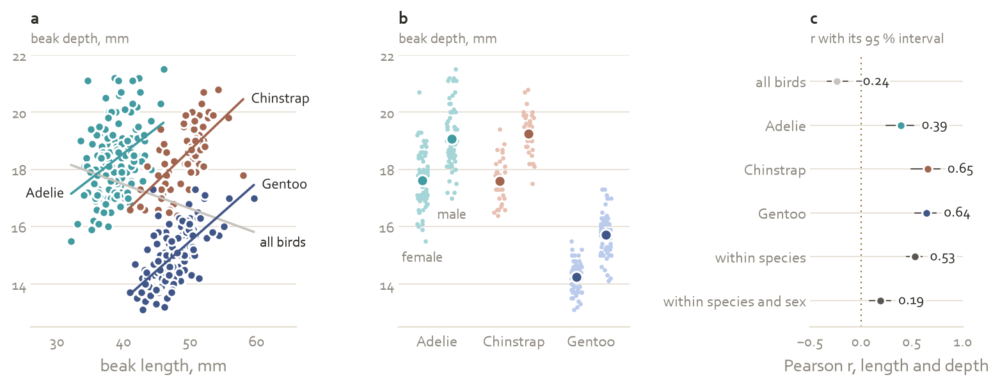
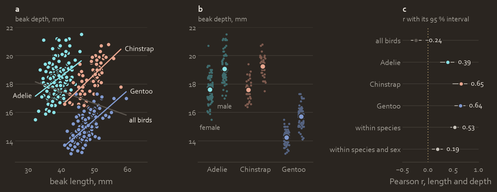
Papers · 89 or 183 mm · matplotlib
Paper figure
No title block: the claim opens the caption, and the file name carries the stamp.
- Drawn at final width: 89 mm single column, 183 mm double
- Lines 1.2 pt, markers 20 pt², four series per panel at most
- Tones alternate in lightness, so greyscale prints hold
- One vector PDF per figure, fonts embedded


Dissertation · 125 mm text width
Dissertation
Each figure keeps its claim title, so it reads outside the chapter.
- Body in TeX Gyre Pagella 11 pt; Lato for captions, tables and figure text
- Figures at the full text width
- Model in teal, data in terracotta, bounds in dotted ochre, in every chapter
- Tables without vertical rules
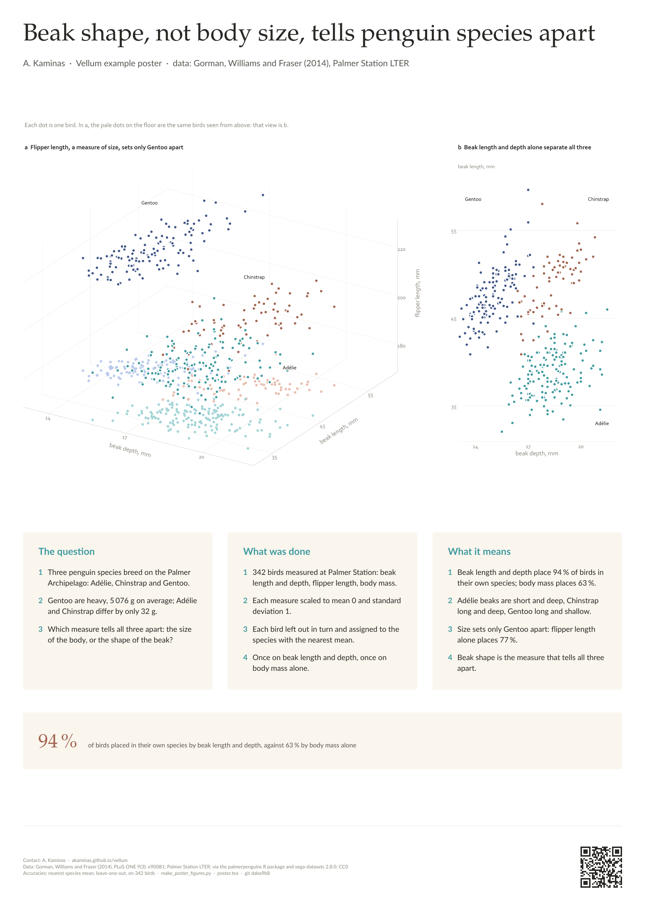
Conference poster · A0 portrait · beamerposter
Conference poster
One claim, read from two metres.
- Headline 90 pt, body 28 pt, nothing under 18 pt
- Under 300 words
- One central figure: a 3D scatter beside its 2D twin
- The key number in terracotta, as a stat tile


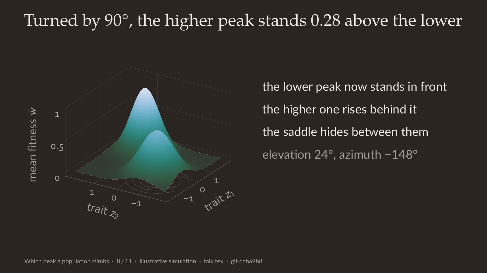
Talk · 16:9 · beamer, dark twin
Talk
The frame title states the claim; the figure drops its own title.
- Dark twin for a dark room, light for daylight, chosen once per deck
- One series revealed per slide; surfaces at fixed views, then flat
- Title 28 pt, body 20 pt, nothing under 16 pt
- Figure text at 2.2 × print size

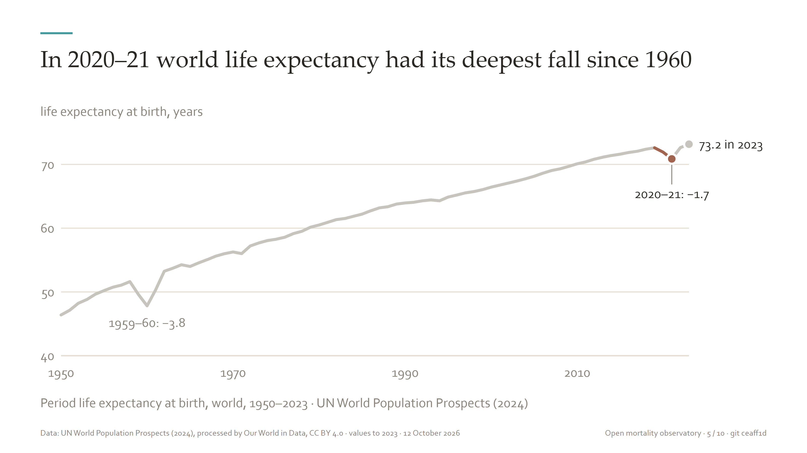
Pitch deck · ten slides · HTML
Pitch deck
Ten slides for a funder, read without a speaker.
- Light mode, plain chart forms
- Each title a claim; key numbers as stat tiles
- Terracotta once per slide, for the key point
- Source and date in every footer

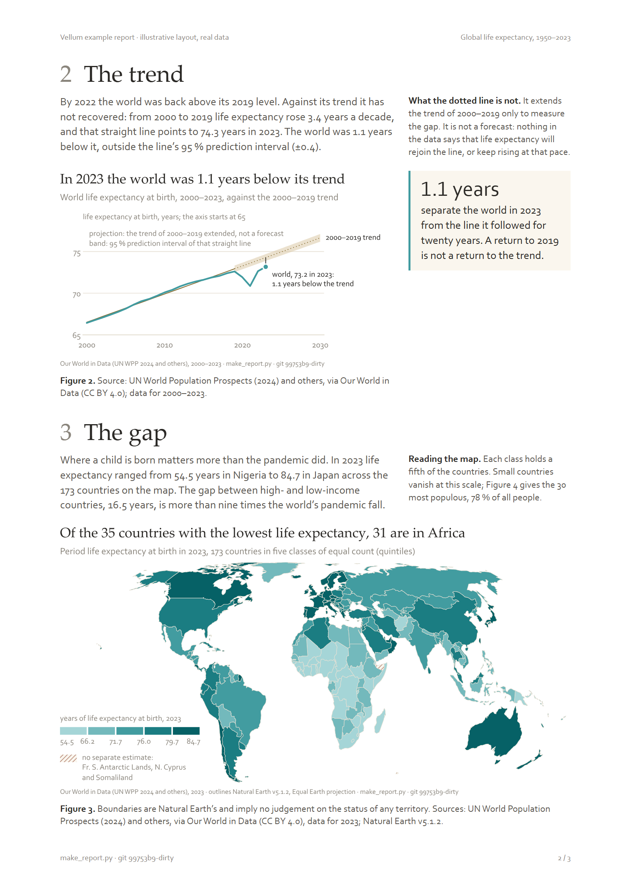
Report · A4 · HTML and matplotlib
Report
Sections follow the argument: situation, trend, gap, options, ask. One figure each, titled with its claim.
- 20 mm margins, twelve columns, body 10.5 pt
- Projections as tint bands, dotted after the last observed year
- Country comparisons as sorted dot plots, focal countries in terracotta
- A host keeps its logo and cover; the figures stay Vellum

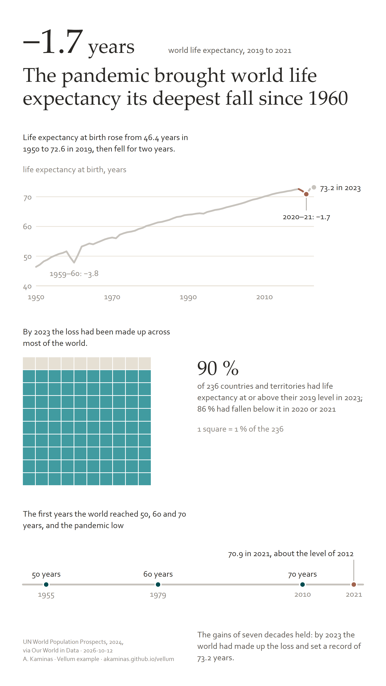
Infographic · 1080 × 1920 px · HTML and SVG
Infographic
Three formats from one script and one dataset: story, square and data sheet.
- 1080 × 1920, 1080 × 1080 and 1920 × 1080 px
- Line chart, Equal Earth choropleth, unit chart, small multiples, beeswarm
- Every number printed from the data
- Rendered at 2× by headless Edge, light and dark from one page
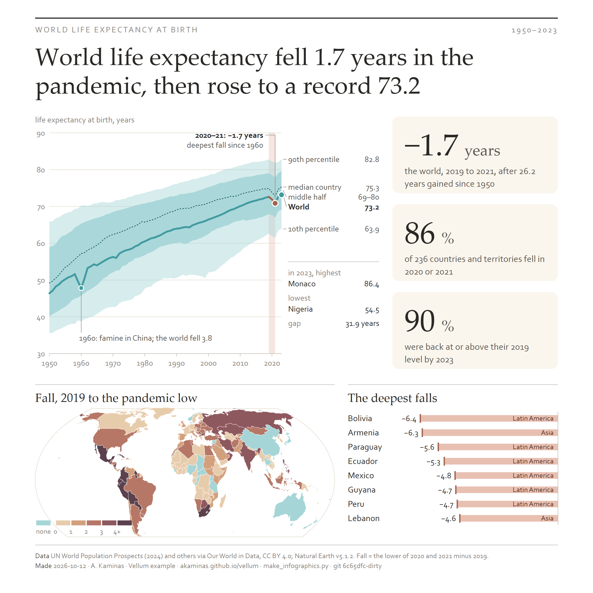
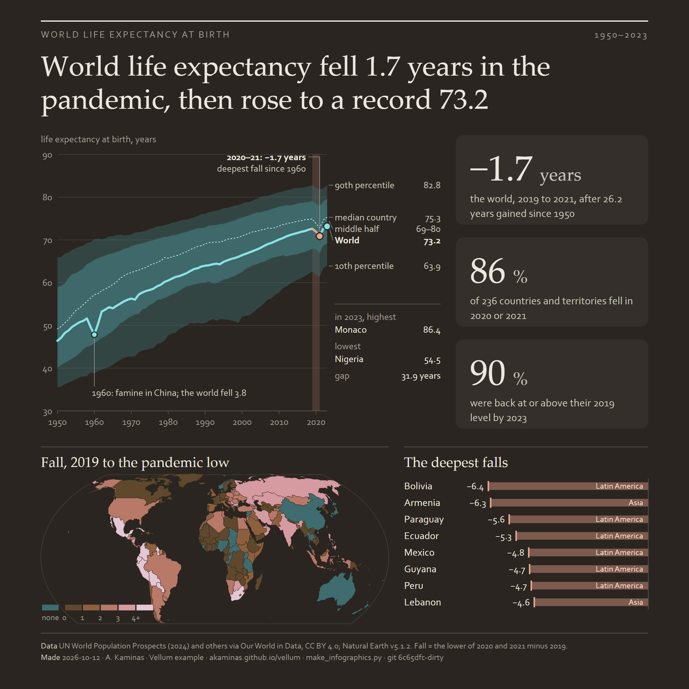


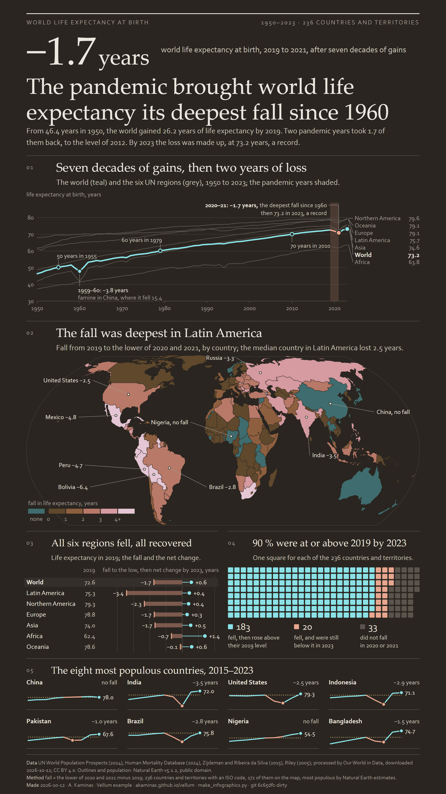


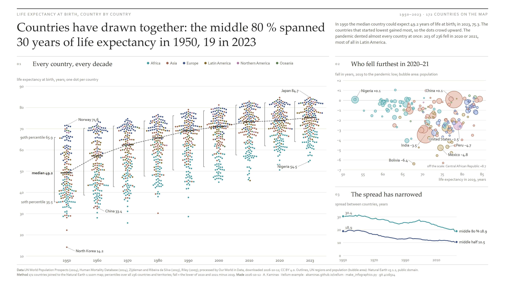
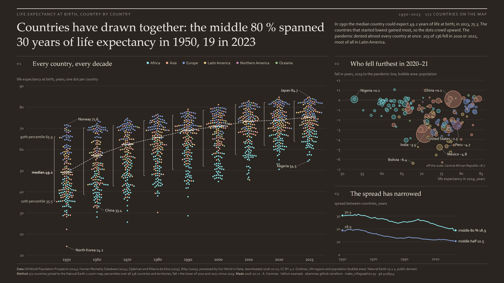